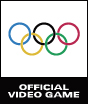
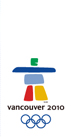
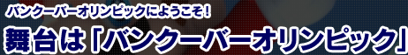
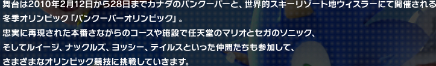
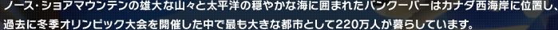
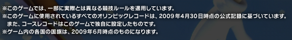

もどる




. All rights reserved. SUPER MARIO characters © NINTENDO. Trademarks are property of their respective owners. Wii and Nintendo DS are trademarks of Nintendo.ニンテンドーDSは任天堂の登録商標です。Trademarks registered in Japan.SONIC THE HEDGEHOG characters © SEGA. Sonic The Hedgehog is a registered trademark of SEGA Corporation.")